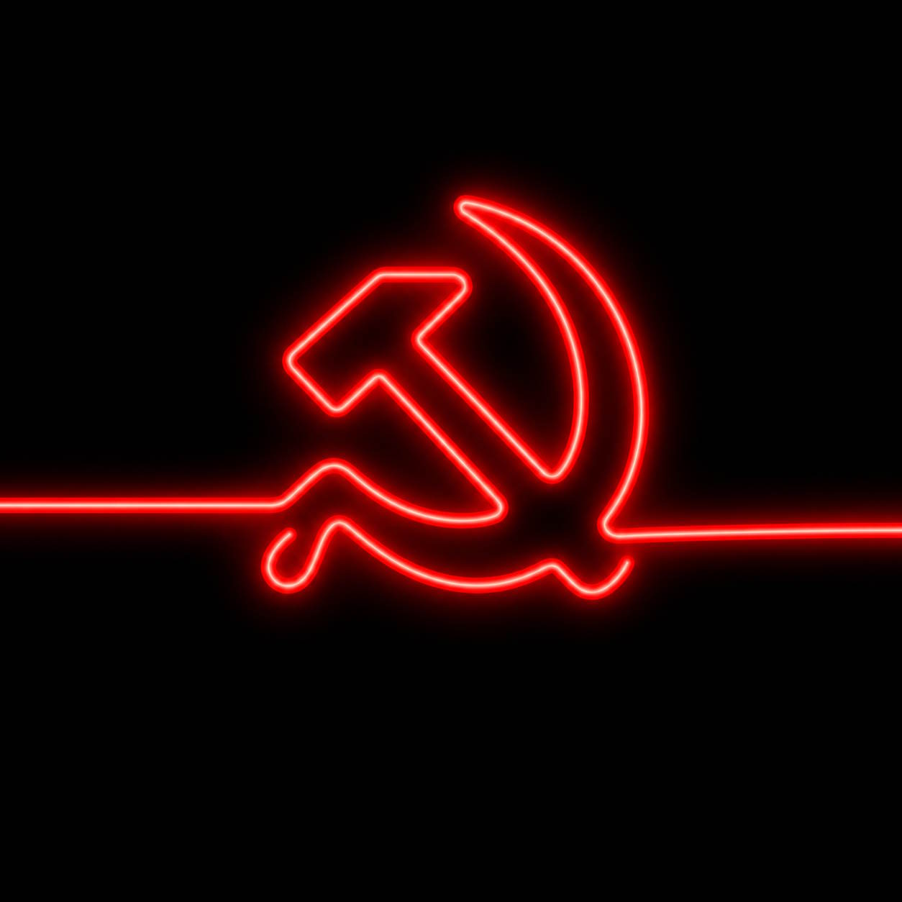

Des lignes du temps parallèles, pays par pays, pour suivre les étapes des luttes et des révolutions, voir ce qui se passait ailleurs au même moment et relier les évènements entre eux.

Mouvements sociaux, politiques et révolutionnaires depuis 1789
Des lignes du temps parallèles, pays par pays, pour suivre les étapes des luttes et des révolutions, voir ce qui se passait ailleurs au même moment et relier les évènements entre eux.